|
|
| sea anemones text index | photo index |
| Phylum Cnidaria > Class Anthozoa > Order Actiniaria > Genus Stichodactyla |
| Merten's
carpet anemone Stichodactyla mertensii Family Stichodactylidae updated Dec 2024 Where seen? This enormous carpet anemone with short fat tentacles is sometimes seen on our undisturbed Southern shores. Features: Diameter to 1m or more. The large oral disk covered with short tentacles so that it resembles a carpet. The oral disk is often held flat against the surface, unlike the Giant carpet anemone (Stichodactyla gigantea) in which the oral disk is often folded. Small pedal disc frequently attached in crevice. The anemone can retract but not rapidly. Body column tan to white with bumps (verrucae) that are adhesive and appear as rows of spots, generally in magenta or orange (which may appear purplish at depth). No verrucae below wide upper column, but splotches of pigment continue down short, narrow column in more or less longitudinal streaks. The tentacles are not adhesive, club-shaped to finger-like. All tentacles may be short (10-20 mm long), or some (in patches) very long (to 50 mm or more). It does not have a fringe of long-short tentacles at the edge of the oral disk like Haddon's carpet anemone (Stichodactyla haddoni). Sometimes confused with other large sea anemones and similar large cnidarians. Here's more on how to tell apart the different kinds of carpet anemones and large sea anemones with long tentacles and large 'hairy' cnidarians. Carpet food: Carpet anemones harbour symbiotic single-celled algae (called zooxanthellae). The algae undergo photosynthesis to produce food from sunlight. The food produced is shared with the anemone, which in return provides the algae with shelter and minerals. The zooxanthellae are believed to give tentacles their brown or greenish tinge. Carpet anemones may also feed on fine particles that are trapped on their bodies. These anemones have not been observed to eat large animals. Giant friends: Besides the symbiotic algae that lives inside the their tentacles several kinds of animals have been associated with Merten's carpet anemones. These anemonefishes (Amphiprion sp.) including A. akallopisos, A. akindynos, A. allardi, A. chrysogaster, A. chrysopterus, A. clarkii, A. fuscocaudatus, A. latifasciatus, A. leucokranos, A. ocellaris, A. sandaracinos, A. tricinctus. But so far, the only animals observed on Merten's carpet anemones were the Five-spot anemone shrimps (Periclimines brevicarpalis) and the Clown anemonefish. Status and threats: As at 2024, it is listed as Endangered in Singapore. |
 Terumbu Hantu, Apr 12 |
 |
 |
|
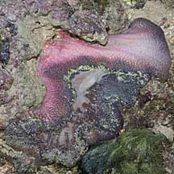 Pulau Jong, Apr 11 |
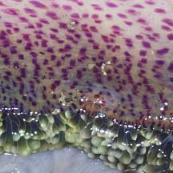 |
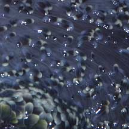 |
| Merten's carpet anemones on Singapore shores |
On wildsingapore
flickr
|
| Other sightings on Singapore shores |
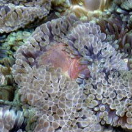 |
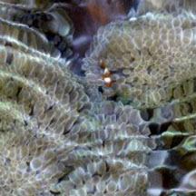 With tiny Clown anemonefish. |
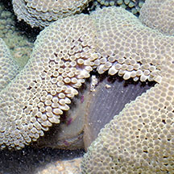 |
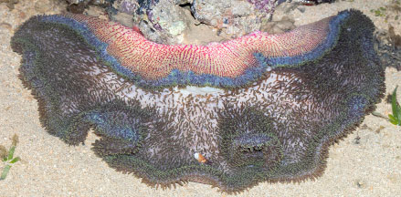 Pulau Semakau North, Sep 23 |
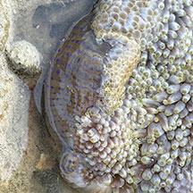 |
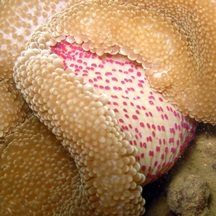 Raffles Lighthouse, Sep 10 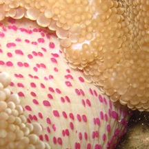 Photo shared by Neo Mei Lin |
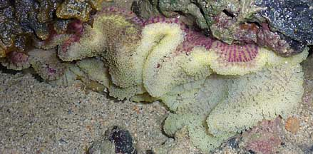 Bleaching. Pulau Senang, Jun 10 |
||

Links
Other references
|